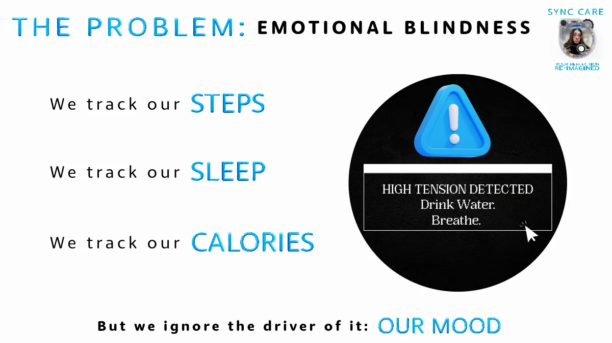
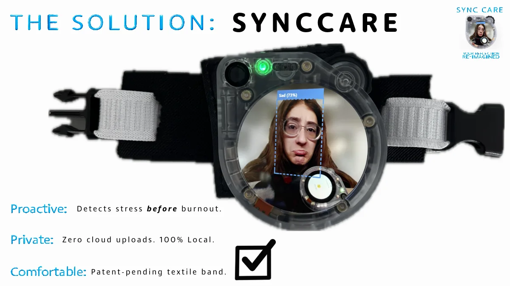
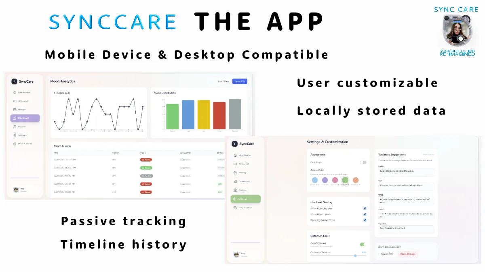
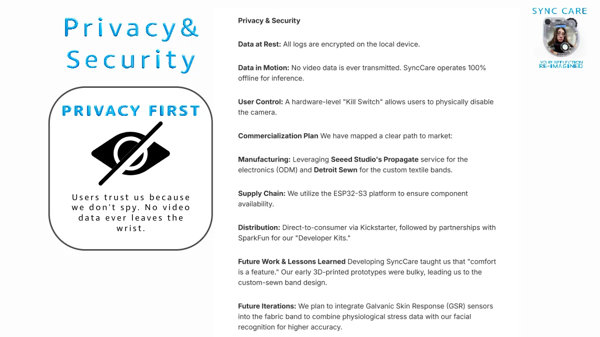
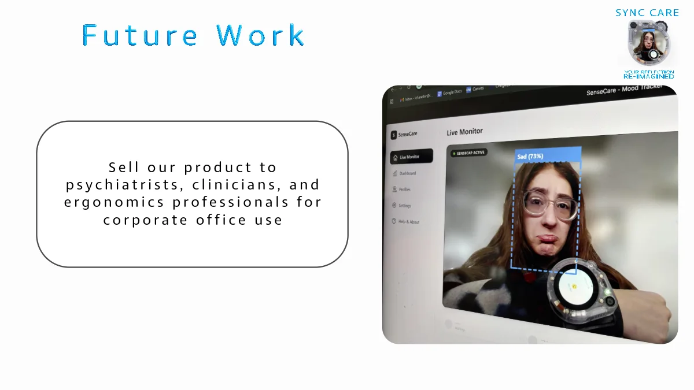

Design need
The concept explores emotional context that conventional activity wearables may not capture.
Wearable Technology
Wearable wellness concept combining image-based input, local AI interpretation, privacy-focused design, and calm user feedback.

The concept explores emotional context that conventional activity wearables may not capture.
A wearable camera-based device paired with a companion dashboard for passive trends, timelines, and user feedback.
Local/offline inference, encrypted local logs, and a hardware camera kill switch were built into the concept.
Image-based emotion/mood interpretation was paired with a wearable form factor and dashboard concept.
The design emphasized calm feedback, simple visual trends, and a comfortable custom-sewn wearable band.
Ideas included additional physiological sensing and continued refinement of comfort, fit, and model accuracy.
Project archive
This material stays inside the case study so the main portfolio pages remain clean.




